El objetivo general es analizar una señal de transmisión serial por medio de un osciloscopio, utilizando un computador, un adaptador USB a Serial, un conector DB9 y el programa PuTTY.
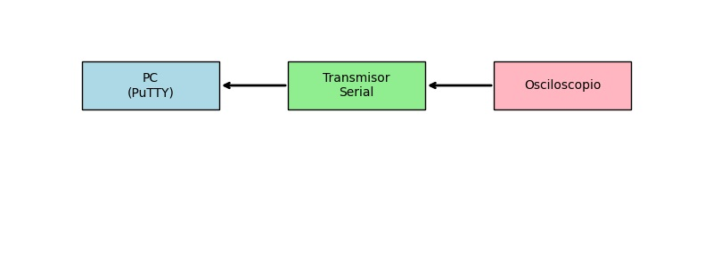
En esta sección se detallan los fundamentos necesarios para comprender el experimento de transmisión serial y su observación en un osciloscopio.
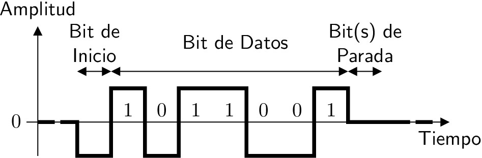
- La comunicación serial es un método de transmisión de datos en el cual la información se envía bit a bit a través de un solo canal o línea de comunicación.
- En contraposición a la comunicación paralela (donde varios bits se transmiten simultáneamente por múltiples líneas), la serial utiliza menos conductores y es común en largas distancias.
- La velocidad de transferencia de datos se mide en bits por segundo (bps o baudios), siendo 9600, 19200 o 115200 bps valores típicos.
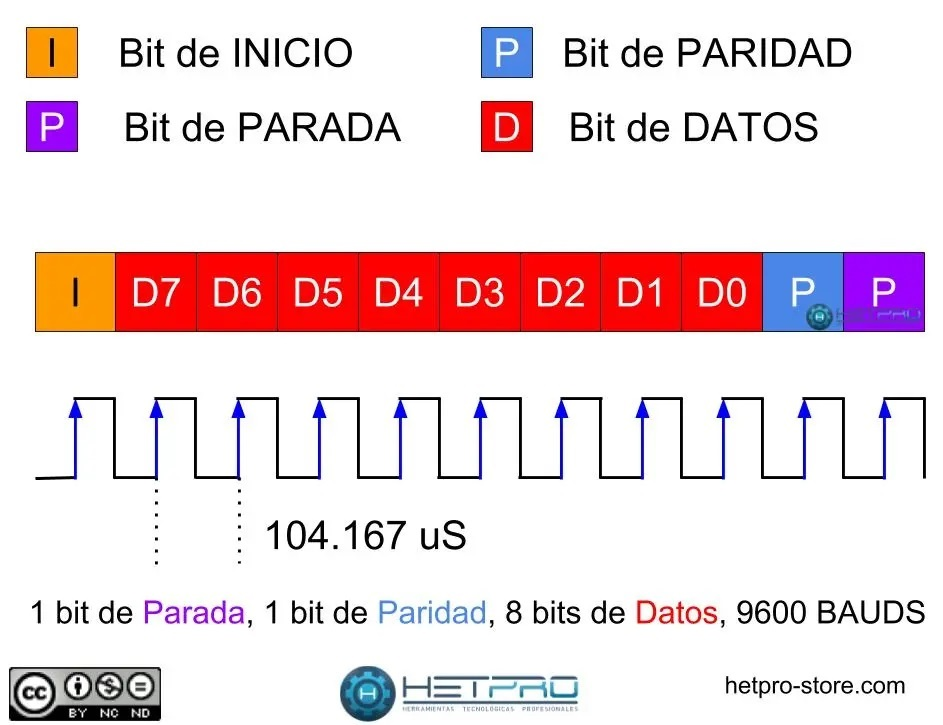
En la siguiente tabla se resumen los parámetros principales de la comunicación serial asíncrona:
| Parámetro | Descripción |
|---|---|
| Velocidad en baudios | Es la frecuencia de símbolo o bits por segundo (por ejemplo, 9600 bps). |
| Bits de datos | Generalmente 7 u 8 bits de datos por trama. |
| Bit de paridad | Puede ser None (ninguna), Even (par), Odd (impar). |
| Bits de parada | Por lo general 1 o 2 bits de parada. |
| Flujo de control | Puede ser ninguno, por hardware (RTS/CTS) o por software (XON/XOFF). |
Estos parámetros deben ser configurados de la misma manera en ambos dispositivos que se comunican para que la transmisión y recepción de datos sea correcta.
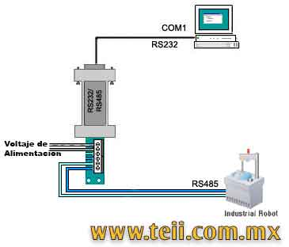
RS-232:
RS-485:
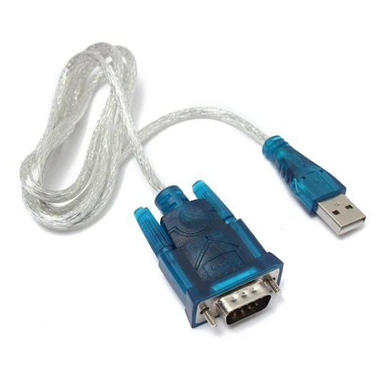
TTL Serial (Transistor-Transistor Logic):
- Usa niveles de 0 V y 5 V (o en algunos casos 3.3 V).
- Se emplea típicamente en comunicación directa entre microcontroladores o dispositivos lógicos de baja potencia.
- No tolera longitudes de cable muy extensas ni altos niveles de ruido.
RS-232:
- Utiliza tensiones más altas y diferenciadas. Normalmente, un bit lógico ‘1’ puede ser representado por -12 V y un bit lógico ‘0’ por +12 V (valores aproximados; el estándar acepta rangos variados).
- Permite distancias más largas y es más resistente al ruido que TTL.
- Es el protocolo usado históricamente en puertos serie de computadoras.
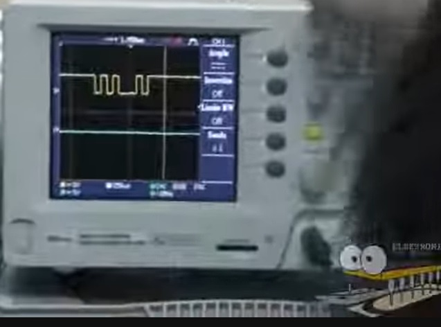
- Para observar un bit o la trama de bits en un osciloscopio, se debe conectar la punta de prueba (probe) al pin TX (transmisión) y la referencia de la sonda a tierra (GND).
- Ajustar el tiempo de barrido (Time Base) y la escala de voltaje (Voltage Scale) de modo que se puedan apreciar claramente los niveles altos y bajos.
- Usar el disparo (Trigger) correcto, preferentemente en modo borde descendente o ascendente según la trama, y ajustar el nivel de disparo (Trigger Level) para que se estabilice la señal en la pantalla.
- A partir de la captura de la señal, identificar los bits de inicio (start), bits de datos, bit de paridad (si aplica) y bits de parada.
- Contar y medir la duración de cada bit para verificar la velocidad en baudios configurada (por ejemplo, 9600 bps implica un período de bit de aproximadamente 104,17 microsegundos).
A continuación se describe paso a paso cómo realizar la experiencia de observar la transmisión serial en un osciloscopio, partiendo de la conexión física hasta el análisis de la señal.
1. El conector DB9, utilizado para RS-232, típicamente presenta la siguiente distribución de pines (vista externa, con los pines hacia nosotros):
5 4 3 2 1
9 8 7 6
2. Generalmente:
- Pin 2: RX (Recibe datos)
- Pin 3: TX (Transmite datos)
- Pin 5: GND (Tierra)
Verificar la hoja de datos (datasheet) del adaptador o del dispositivo para confirmarlo, ya que a veces puede variar el número de pin para TX/RX.
Para mayor claridad, a continuación se presenta una tabla con la asignación común:
| Pin | Función (RS-232) |
|---|---|
| 2 | RX (Recibe datos) |
| 3 | TX (Transmite datos) |
| 5 | GND (Tierra) |
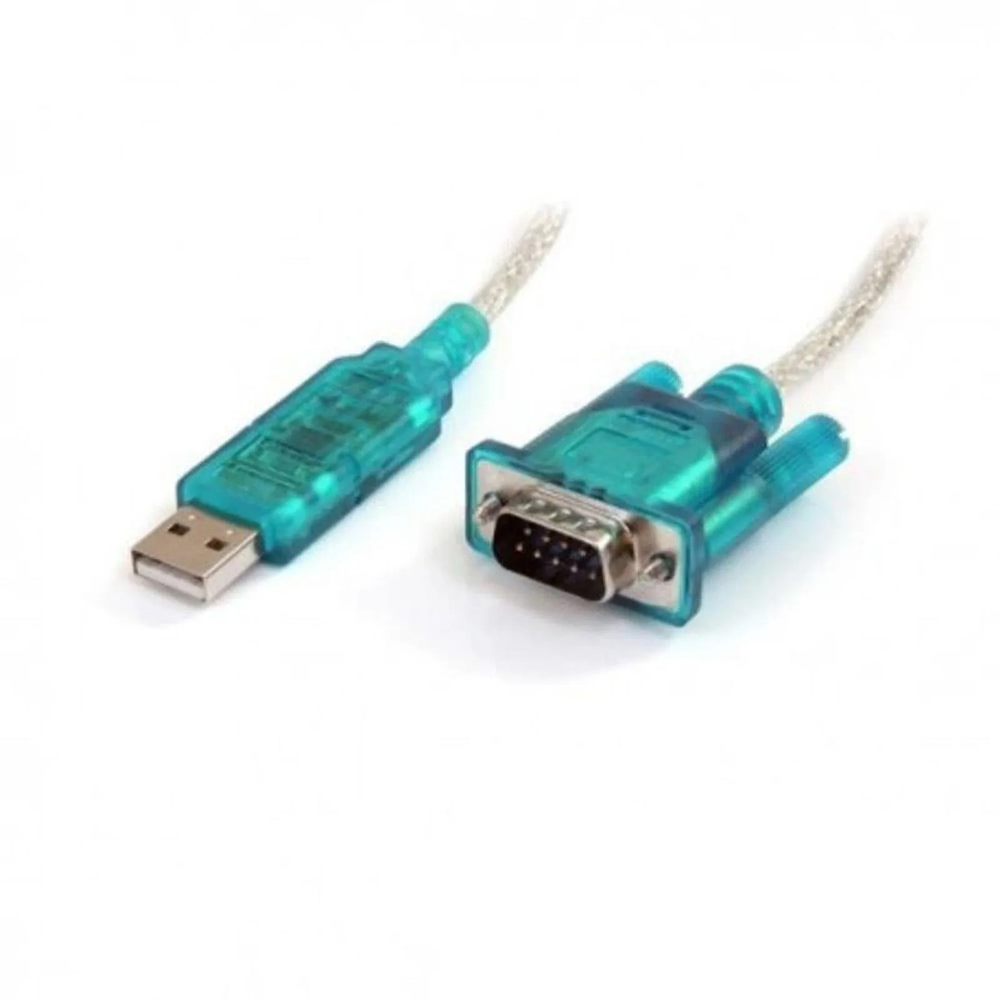
1. Asegurarse de que el adaptador USB a Serial sea del tipo RS-232 (a veces hay adaptadores USB a TTL que no manejan los mismos voltajes).
2. Conectar físicamente el DB9 hembra del adaptador al DB9 macho (o viceversa) del cable que se usará; o si el adaptador trae los pines DB9 incorporados, simplemente enchufarlo en el lugar adecuado.
3. Verificar que el cable no esté dañado y que la conexión sea firme para evitar falsas lecturas.
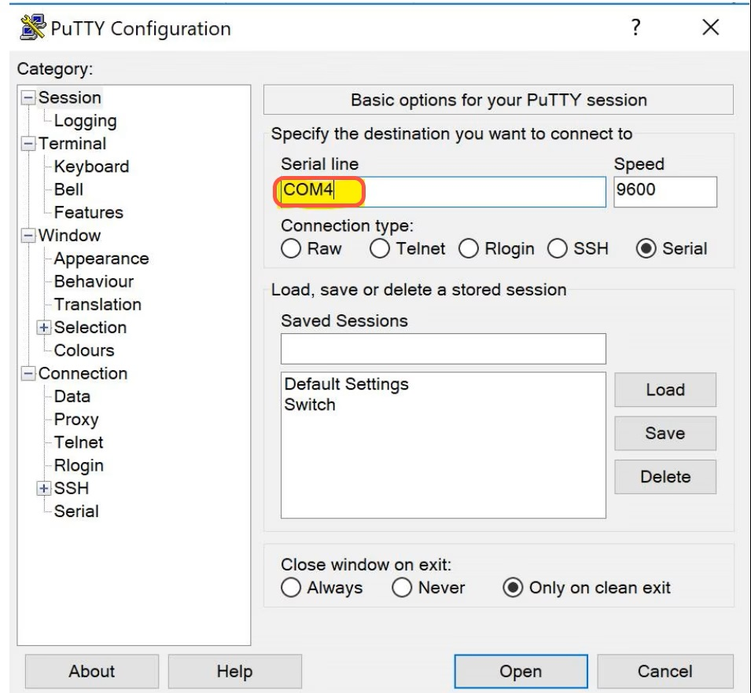
1. Instalar y/o abrir PuTTY en el computador.
2. En la pestaña “Session”, seleccionar la opción “Serial”.
3. Configurar el Puerto COM que corresponda al adaptador USB a Serial (por ejemplo, COM3, COM4, etc.).
4. Configurar la velocidad en baudios (por ejemplo, 9600).
5. Ingresar los mismos parámetros de comunicación (bits de datos, paridad, bits de parada) que se requieran (por ejemplo, 8 bits de datos, No paridad, 1 bit de parada).
6. Hacer clic en “Open” para iniciar la comunicación.
7. Desde la consola de PuTTY, escribir un carácter repetidamente o usar algún script que envíe datos de forma continua (por ejemplo, ‘A’ o cualquier carácter ASCII). Se puede presionar varias veces una tecla para observar la señal en el osciloscopio.
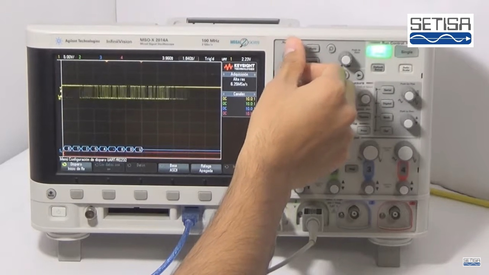
1. Con el dispositivo transmitiendo, conectar la punta de prueba del canal 1 del osciloscopio al pin TX del DB9 (o la señal de TX del adaptador).
2. Conectar la pinza de tierra (GND) de la sonda a GND (pin 5 del DB9).
3. Configurar el osciloscopio:
- Volts/Div (Escala de voltaje): Ajustar para que la señal de alrededor de ±10 V a ±12 V (RS-232) sea visible.
- Time/Div (Escala de tiempo): Empezar, por ejemplo, con 100 µs/div o 200 µs/div para ver con claridad cada bit a 9600 bps.
- Trigger: Seleccionar modo de disparo en Edge y ubicar el nivel de disparo en una tensión intermedia (aprox. 0 V) para detectar las transiciones correctamente.
4. Debería verse una trama correspondiente al carácter que se está enviando. Cada bit durará alrededor de 104 µs.
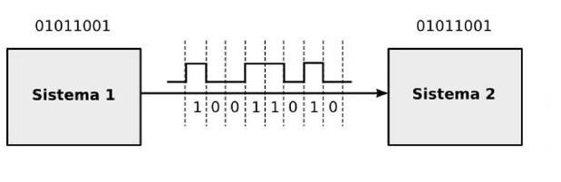
1. Identificar el bit de inicio (Start Bit): En RS-232 este bit es un nivel bajo (por encima de 0 V puede ser + voltaje; por debajo de 0 V es − voltaje, depende de la referencia en el osciloscopio). Normalmente se ve una transición desde el estado de reposo (inactivo) a un estado bajo.
2. Contar los bits de datos: Generalmente 8 bits, cada uno con una duración de aproximadamente 104 µs a 9600 bps.
3. Verificar bit de paridad (si aplica): Puede estar presente como un bit adicional para paridad par o impar.
4. Verificar los bits de parada (Stop Bits): Usualmente 1 o 2 bits en estado alto.
5. Anotar los niveles de voltaje: RS-232 inactivo (línea de TX en reposo) está en un nivel negativo (~ -12 V). Cuando se envía un bit de inicio, la línea pasa a un nivel positivo (~ +12 V), dependiendo del adaptador. (Recordar que en RS-232 los niveles están invertidos con respecto a TTL).
6. Para reconstruir el carácter, traducir cada bit de datos (teniendo en cuenta la polaridad invertida de RS-232) a la representación binaria y, posteriormente, al valor ASCII correspondiente.
A continuación se sugieren cinco preguntas de distintos niveles de complejidad cognitiva:
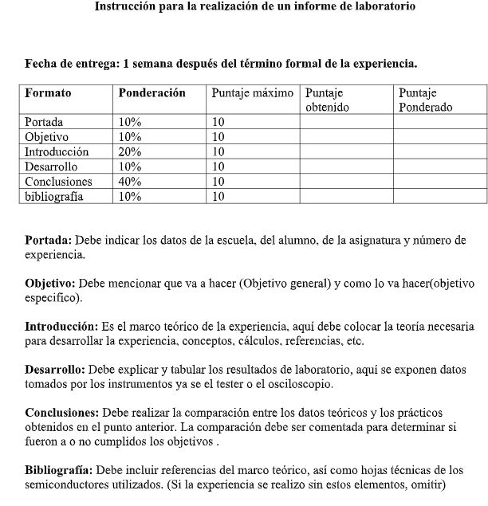
Para concluir, se recomienda la siguiente estructura en la redacción del informe técnico de la práctica:
- Título: “Análisis de señal de transmisión serial RS-232 mediante osciloscopio”.
- Nombre de la institución, departamento o asignatura.
- Integrantes y fecha de realización del laboratorio.
- Docente o persona encargada.
- Incluir el objetivo general (analizar una señal de transmisión serial usando osciloscopio, computador y adaptador USB a serial).
- Enumerar objetivos específicos, por ejemplo:
- Desarrollo de los puntos mencionados en la sección 1:
- Principios de transmisión serial (RS-232 vs TTL).
- Parámetros principales: baud rate, bits de datos, paridad, bit de parada.
- Nivel de voltajes RS-232.
- Relevancia del protocolo en el ámbito industrial y de comunicaciones.
- Descripción de los procedimientos realizados.
- Configuración del software PuTTY.
- Conexiones físicas (DB9, USB, osciloscopio).
- Ajustes detallados en el osciloscopio (escala de tiempo, voltaje, disparo, etc.).
- Capturas de pantalla o fotografías (si se permite) de la señal en el osciloscopio.
- Análisis de la trama:
- Evaluar si se cumplieron los objetivos.
- Resumir los hallazgos (por ejemplo, la importancia de la correcta configuración de parámetros).
- Mencionar posibles dificultades y soluciones propuestas (ruido, inestabilidad de la señal, equivocaciones al asignar TX/RX).
- Citar manuales, páginas de referencia confiables (si se utilizaron), datasheets de adaptadores USB a serial, artículos de IEEE u otras fuentes académicas.
- Asegurarse de cumplir con el estilo de referencia pedido (APA, IEEE, u otro formato).